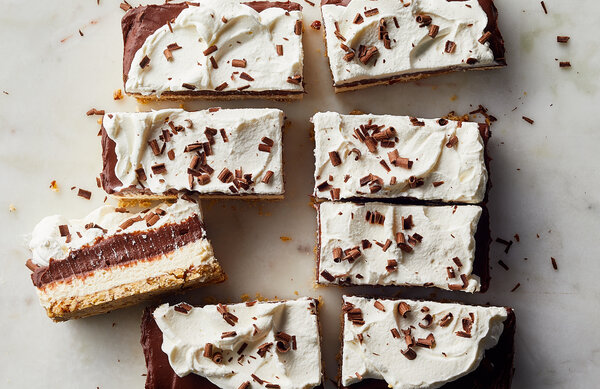

Home
Cheesecake-Chocolate Pudding Bars

Description
You may know it as chocolate delight or chocolate lush, but while this dessert has many names, the recipe
rarely varies.
Traditionally, it starts with a salty nut base, followed by a mixture of cream cheese and Cool Whip, a layer
of
boxed-mix chocolate pudding, and then even more Cool Whip. This from-scratch version starts with a crumbly
pecan
shortbread, which adds texture and salt. The homemade pudding tastes of deep, dark chocolate and serves as
the perfect
contrast to the simple no-bake cheesecake layer. Gilding the lily with freshly whipped cream and chocolate
shavings
isn’t imperative, but it certainly takes it to another level.
INGREDIENTS
FOR THE PECAN CRUST:
- 2/3 cup/86 grams all-purpose flour
- 2/3 cup/80 grams finely chopped pecans
- 1/2 teaspoon kosher salt
- 5 tablespoons/76 grams unsalted butter, melted
FOR THE CHEESECAKE LAYER:
- 8 ounces cream cheese, at room temperature
- 1/2cup/62 grams confectioners’ sugar
- 2 teaspoons pure vanilla extract
- 3/4 cup/187 milliliters cold heavy cream
FOR THE PUDDING:
- 3 ounces/85 grams bittersweet or semisweet bar chocolate, chopped
- 2 tablespoons unsalted butter
- 1/4 cup plus 2 tablespoons/75 grams granulated sugar
- 3 tablespoons cocoa powder
- 3 tablespoons cornstarch
- 1/2 teaspoon kosher salt
- 1 1/2 cups/375 milliliters whole milk
- 3 large egg yolks
FOR SERVING:
- 1 cup/250 milliliters cold heavy cream
- 1 tablespoon confectioners’ sugar
- Chocolate shavings (optional)
PREPARATION
- Heat oven to 350 degrees. Prepare the crust: In a large bowl, combine the flour, pecans,
salt and melted butter; mix
with a fork until everything is evenly moistened. Tip the mixture into an 8-by-8-inch baking
dish and spread into an
even layer. Press the mixture into a flat, even layer using your fingertips. Bake until dry
and golden, about 25
minutes. Set aside to cool.
- While the crust cools, prepare the cheesecake layer: In a large bowl with an electric mixer
on medium, beat the cream
cheese and confectioners’ sugar until fluffy and smooth, about 2 minutes. Beat in the
vanilla. In a separate bowl, beat
the heavy cream with an electric mixer on medium until stiff peaks form. Fold the whipped
cream into the cream cheese
mixture. Spread evenly over the prepared crust. Cover and refrigerate until firm, about 1
1/2 hours.
- Prepare the pudding: Set the chopped chocolate and butter in a medium bowl. Place a
fine-mesh sieve over the bowl and
set aside. In a medium saucepan, whisk together the sugar, cocoa powder, cornstarch and
salt. Add the milk, little by
little, while whisking to incorporate it fully. Whisk in the egg yolks.
- Heat the mixture over medium, whisking constantly, until it has thickened and just come to a
low boil. Continue to cook
the pudding, whisking, for another minute, then immediately pour it into the sieve, pushing
it through with a small
spatula. Let the pudding stand for 1 minute, then whisk it with the butter and chocolate
until smooth. Refrigerate until
cool, about 1 hour. (To speed up the process, spread the pudding into an even layer on a
rimmed baking sheet. Stir often
until the pudding has cooled, about 10 minutes.)
- Whisk to remove any lumps that may have formed while cooling. Dollop the cold pudding over
the top of the cheesecake.
Carefully spread the pudding out into an even layer. Cover and chill until set, at least 4
hours and up to overnight.
- Whip the remaining heavy cream and confectioners’ sugar to stiff peaks. Spread on top of the
pudding. Garnish with
chocolate shavings and cut into squares to serve.